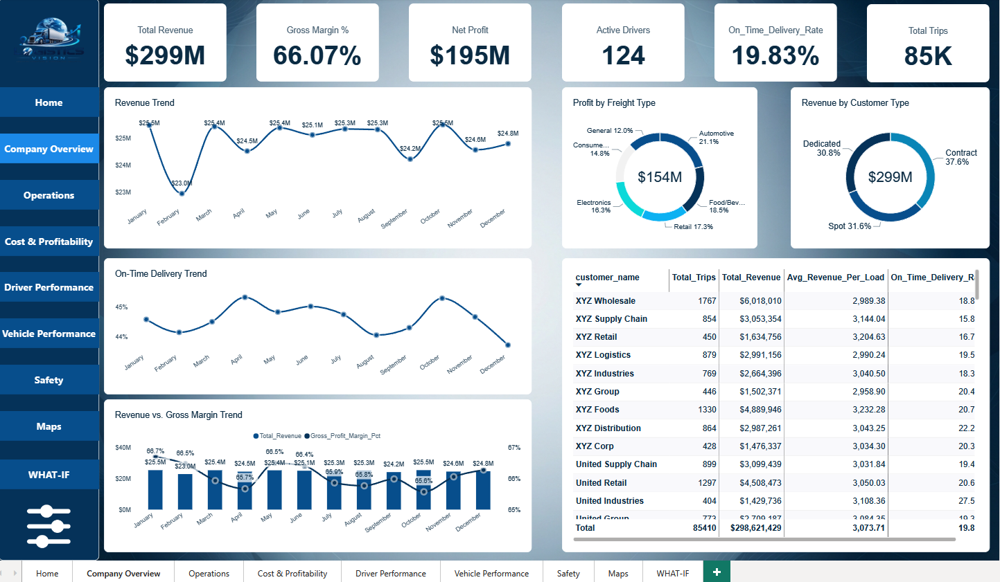

Logistics Vision — Fleet & Supply Chain Analytics Dashboard

Fragmented transport logs and lack of unified visibility into fleet safety, driver behavior, and route cost structures created operational blind spots for supply chain management.
Structured a normalized Star Schema connecting operational trip facts to driver, vehicle, and route dimensions. Automated ETL data transformations in Power Query, formulated custom DAX measures, and created dynamic What-If parameters to simulate fuel and route cost variations.
Delivered a comprehensive 9-page interactive dashboard empowering fleet managers to evaluate route profitability, track driver safety scorecards, and forecast operating expenses under changing logistics scenarios.